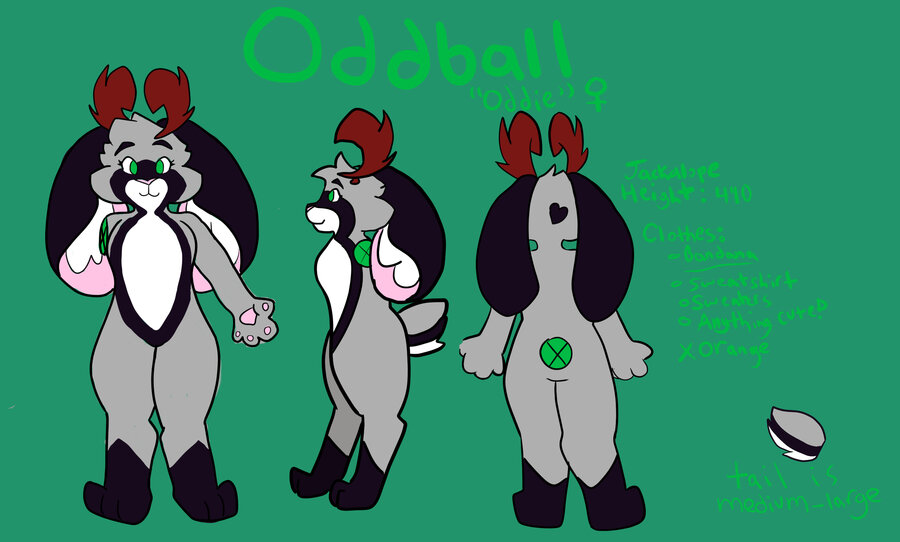

Welcome to Dewside
Oddball
A fursona is an animal character a furry creates to "step into" through art, costuming, or writing. Fursonas can be a one-to-one reflection of a person, a completely alien identity, or, as in my case, a representation of the person they want to become.
Ref Sheet:

Click to view larger.
Oddball, or by the nickname I've become fond of, Oddie, is my fursona. She is a 4'10 jackalope, and her age matches my own.
Oddball embodies the person I strive to become-- happy, motivated, and both open and proud of who she is.
I created Oddball when I was 14 years old. She has grown with me since that time, and I am excited to continue growing with her for years to come.